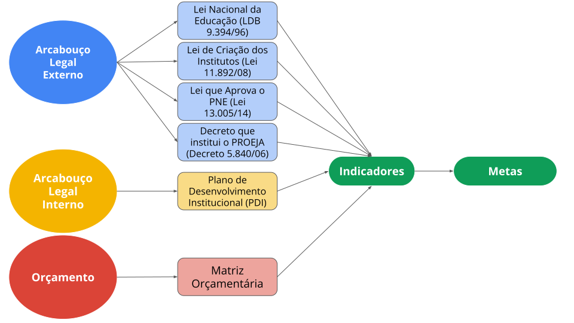
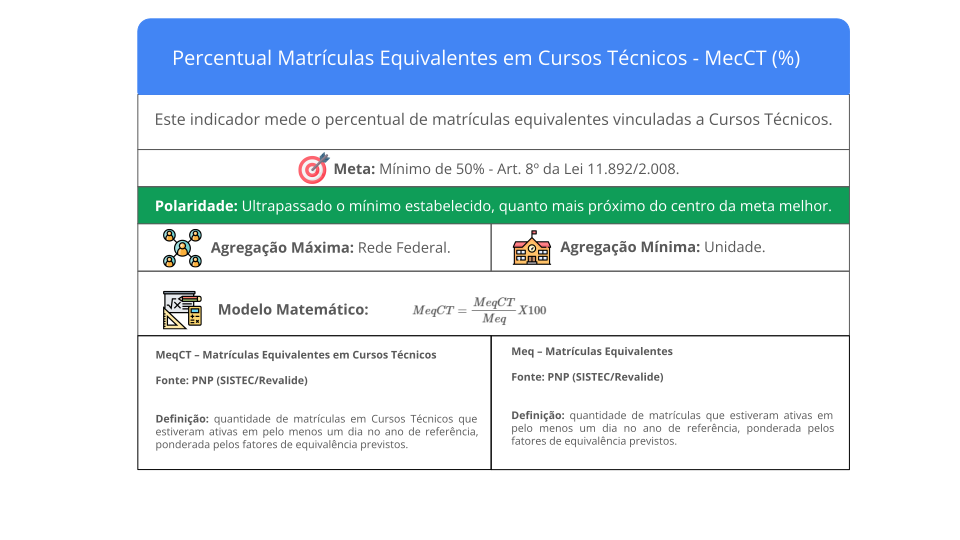
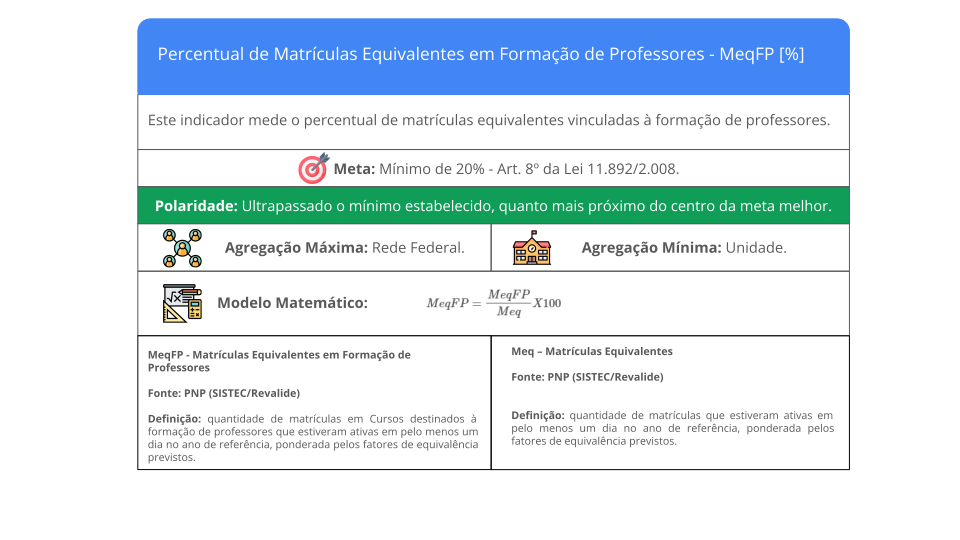
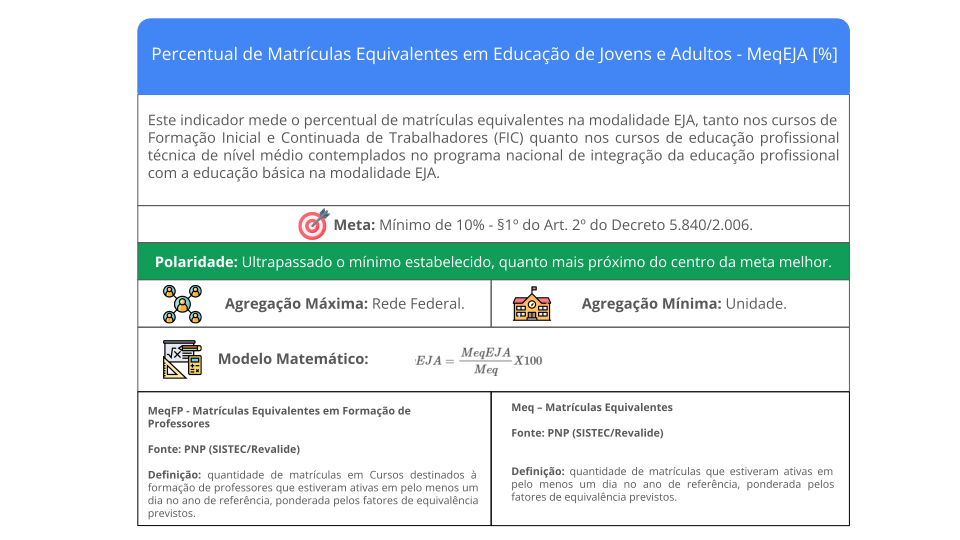
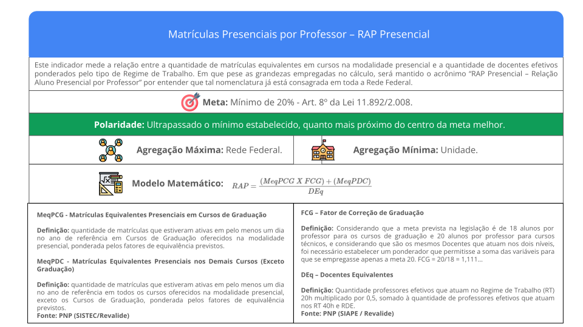
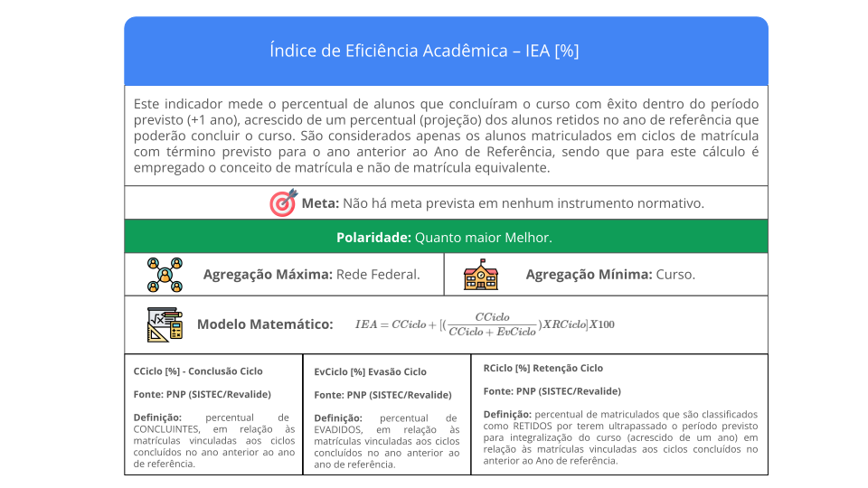
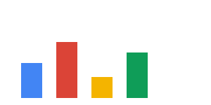

Indicadores de Gestão
Entendendo as métricas que impactam o orçamento
13/06/2025
Introdução
Contexto Inicial: A Necessidade da Regulamentação
A Lei nº 11.892/2008, que instituiu os Institutos Federais e Plano Nacional de Educação (PNE), aprovado pela Lei nº 13.005/2014.
Definir o conceito de “aluno-equivalente” para o cálculo das vagas.
Harmonizar o cálculo da RAP, considerando os diferentes níveis de ensino e as metas do PNE.
Levar em conta as diferentes cargas horárias e demandas de recursos (aulas práticas, laboratórios) dos diversos cursos ofertados na Rede.
Regulamentação: De 2015 a 2021
Aluno-Equivalente: Passou de um cálculo que ponderava fortemente a carga horária anual (FECH 2015) para um modelo simplificado onde a carga horária anual só impacta cursos FIC (FECH 2018/2021), transferindo o peso maior para o esforço (FEC) .
Fator de Esforço de Curso (FEC): Manteve seu propósito original (ajustar pela demanda prática), mas com um mecanismo formal de revisão periódica. Se tornou o principal fator de ponderação dentro do cálculo de aluno equivalente para a maioria dos cursos.
Matrículas Equivalentes
Conceito: Matrícula-Equivalente é o aluno matriculado em um determinado curso, ponderado pelo Fator de Equiparação de Carga Horária (FECH) e pelo Fator de Esforço de Curso (FEC).
\[ Matrícula Equivalente=(AlunoMatriculado)~X~(FECH)~X~(FEC) \]
\[ FECH=\frac{Carga~Horária~Mínima~Regulamentada}{800~horas}~~se~curso~FIC\\ ~\\ FECH=1~demais~cursos \]
Fator de Esforço de Curso
Do SISTEC à PNP

Ficha Técnica
Ficha Técnica
Ficha Técnica
Ficha Técnica
Ficha Técnica
Muito obrigado!
Contato: cgpl@ifb.edu.br